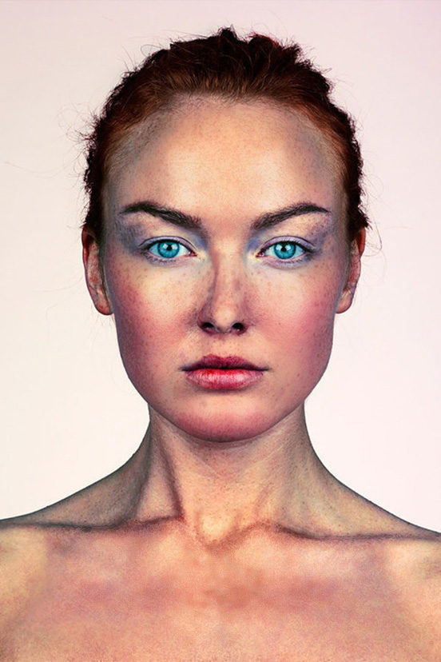

U prvoj vježbi smo pravili vlastiti font i ispisali svoje ime i prezime te hrvatske slovne znakove.
Crtanje Bezierovih krivulja u koordinatnom sustavu.
Treća vježba je bila izvesti vlastiti primjer sa multipliciranim objektima nacrtanima sa alatom Pen.
U vježbi se obrađuje tema izrade složenih objekata koji se sastoje od više staza metodama spajanja (Unite/Compound path) ili oduzimanja oblika (Difference/Subtract). Apliciranje različitih vrsta gradijenata (linearni, radijalni, mesh) od dvije ili više boja.
Zadatak je bio retuširati sliku.
Glavni cilj fotomontaže je kombiniranje više fotografija izrezivanjem dijelova različitih slika i spajanjem u jednu cjelinu. Pritom je najvažnije kvalitetno selektirati dijelove koje želimo izrezati kako bi se što bolje uklopili u finalnu sliku.
Napraviti kinemagraf